Manutenção dos acessos da LT


Serviços realizados
Manutenção dos acessos da linha de transmissão
até 22/09/26
| Trecho | Distância concluída (km) |
|---|---|
| Norte | |
| SE-BNM — SE-N3 | 26,114 |
| SE-N3 — SE-N2 | 0,000 |
| SE-N2 — SE-N1 | 0,000 |
| Leste | |
| SE-E0 — SE-E1 | 2,600 |
| SE-E0 — SE-E2 | 6,500 |
| SE-E2 — SE-E3 | 4,215 |
| SE-E3 — SE-E4 | 10,450 |
| SE-E4 — SE-E6 | 2,400 |
| SE-E6 — SE-E5 | 0,000 |
Trecho BNM-N3
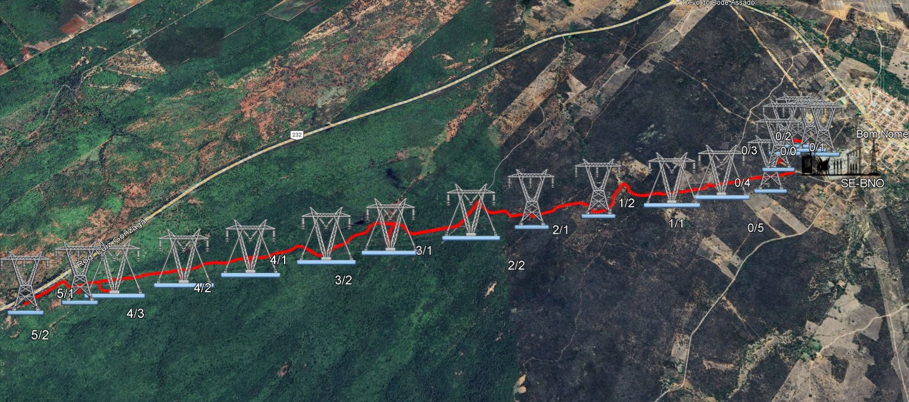
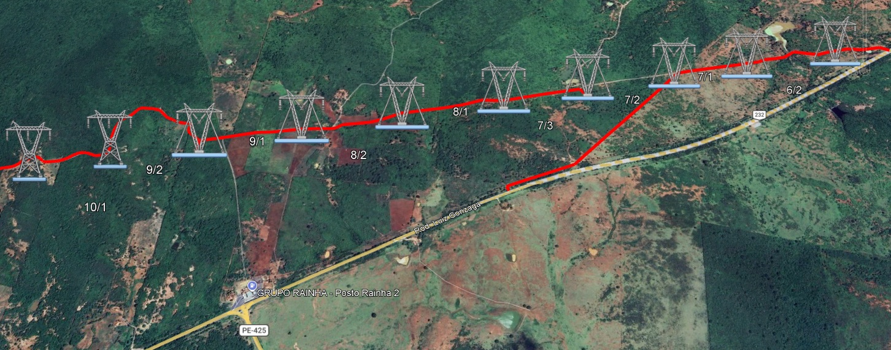
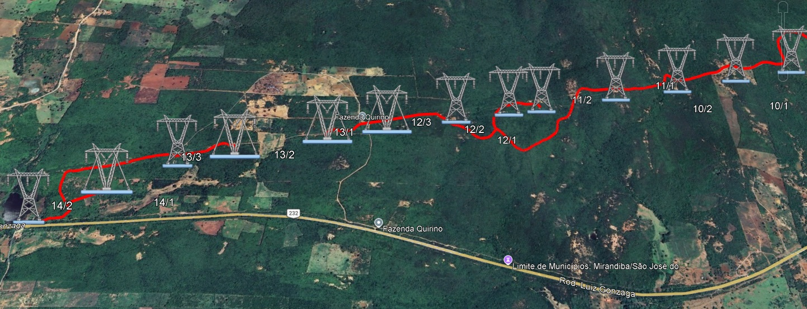
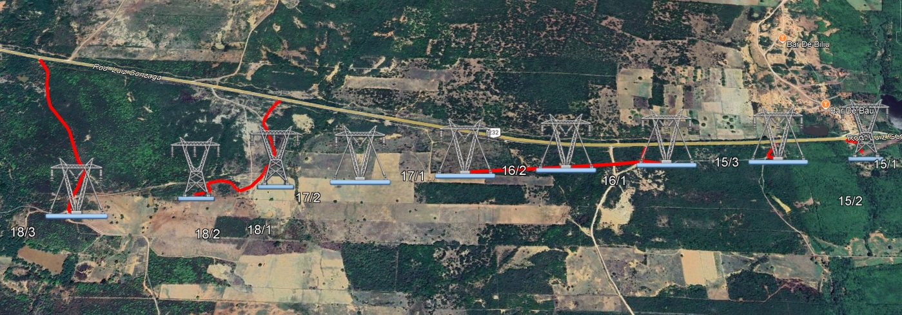
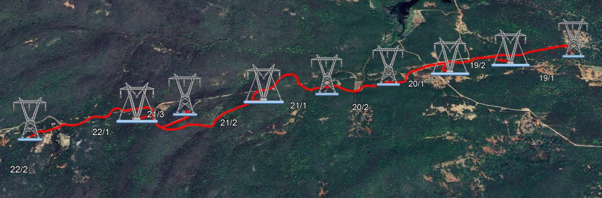
Trecho E0-E1
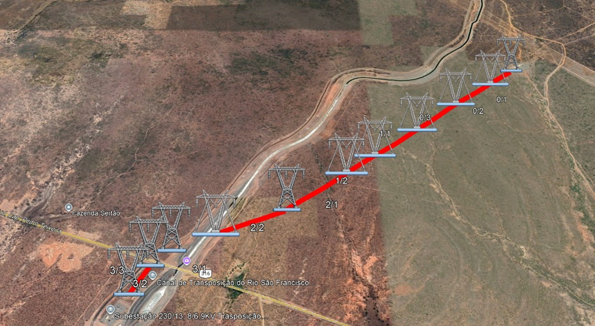
Trecho E0-E2
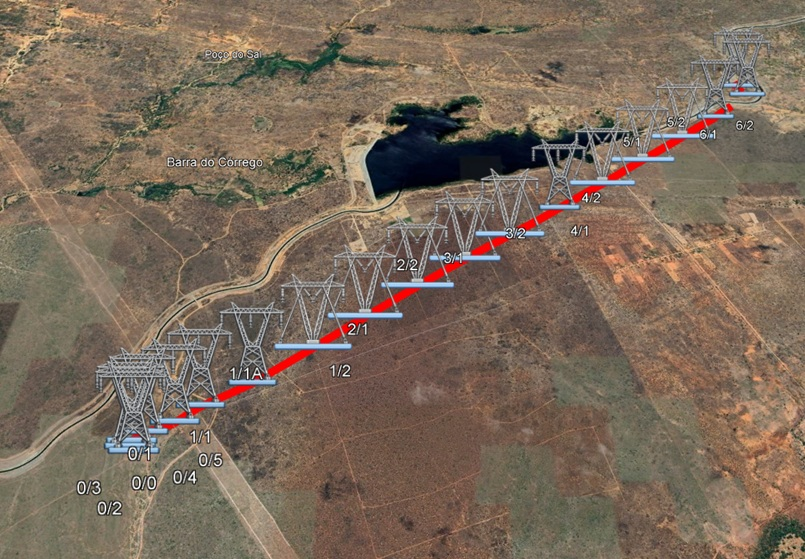
Trecho E2-E3
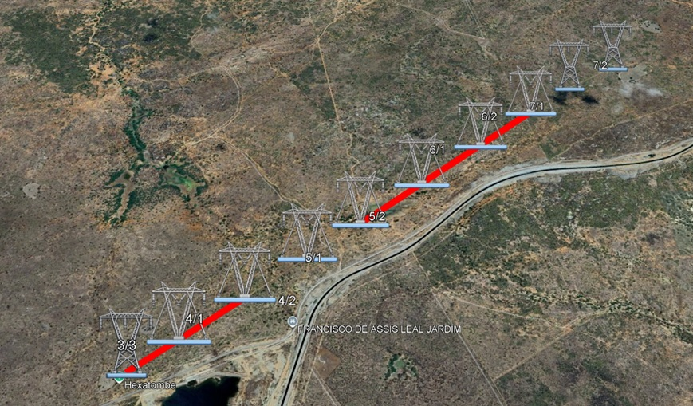
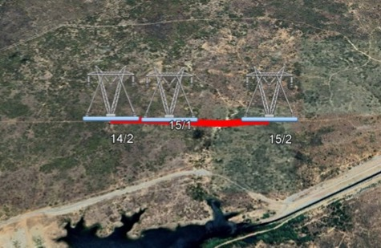
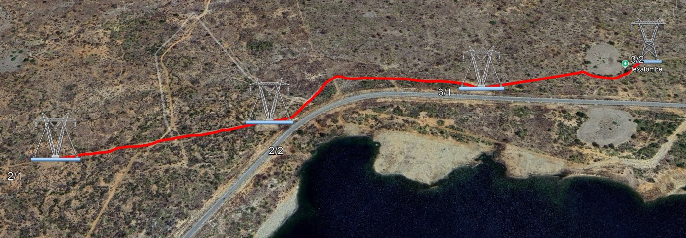
Trecho E3-E4
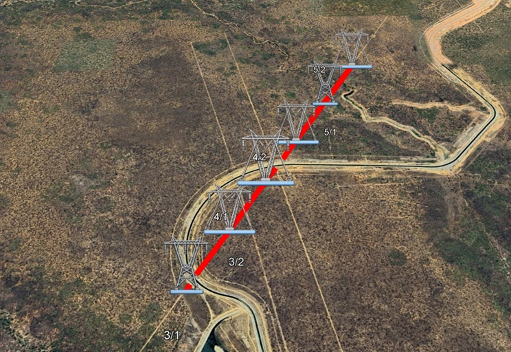
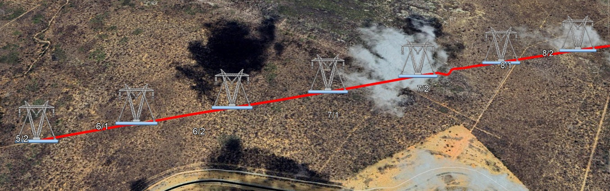
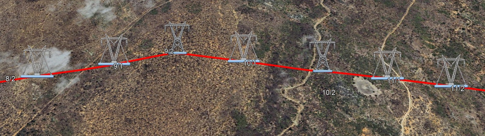
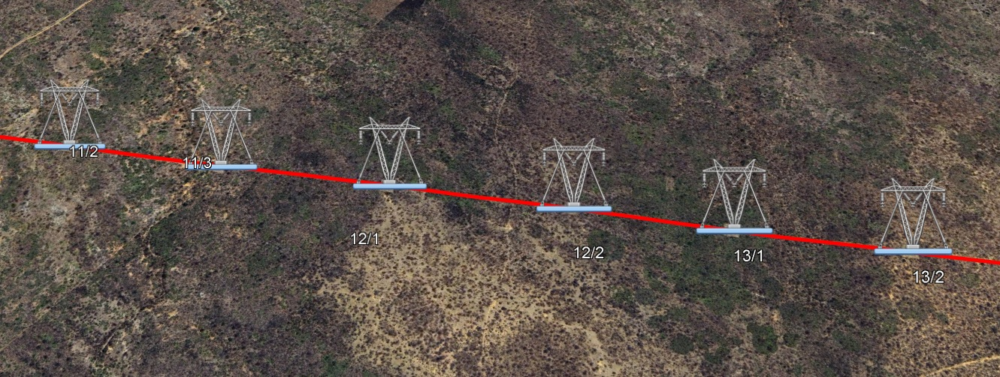
Trecho E4-E6
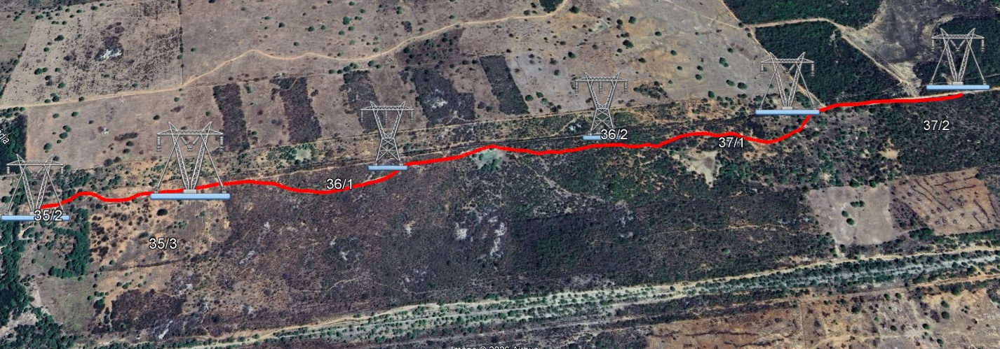